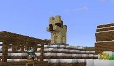
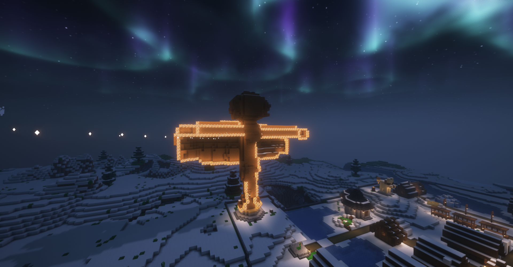
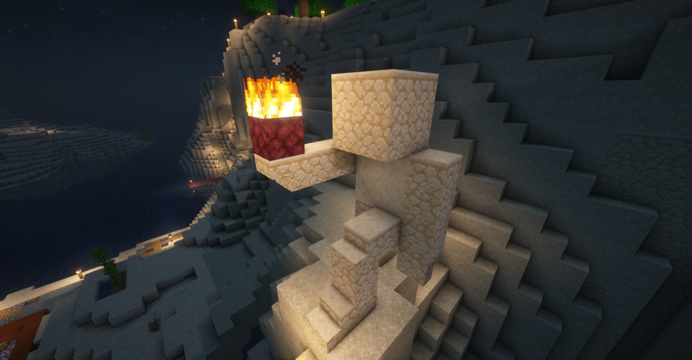

Aspakei
Aspakei
La scultura
Altissime statue di persone o animali dominano gli spazi pubblici delle città konde, testimoni silenziosi della storia e della tradizione. Queste sculture, tendenzialmente in legno trattato per resistere alle condizioni meteo,
raffigurano quasi sempre protagonisti di leggende, eroi, saggi, animali mitici e figure di grande significato culturale. Posizionati in luoghi importanti, come le piazze
centrali, i cortili dei templi o vicino agli ingressi degli edifici più importanti, servono a ricordare le azioni passate, i valori e le forze invisibili che modellano
il mondo. Ogni dettaglio, abiti fluenti, capelli al vento, mani tese, suggerisce una storia mai raccontata, invitando gli spettatori a immaginare il momento catturato
nel legno. La scelta del legno come materia prima non è casuale. I Kondo credono che il legno conservi tracce di vita anche dopo essere stato modellato dalle mani
dell'uomo, rendendolo un mezzo attraverso il quale gli spiriti del passato possono ancora comunicare. Nel corso del tempo, l'esposizione al vento, alla pioggia e al sole
altera la superficie delle statue, approfondendone la struttura e aumentandone il senso di età e saggezza. Alcune sculture vengono regolarmente mantenute e ridipinte,
mentre altre vengono lasciate agli agenti atmosferici naturali, rafforzando l'idea che il tempo stesso collabora alla loro creazione. Oltre al loro ruolo monumentale,
queste statue hanno una funzione cerimoniale. Molti sono i punti focali delle feste stagionali, dove le offerte vengono poste ai loro piedi, canti e storie vengono
eseguite in loro presenza e le persone si riuniscono per cercare guida o ispirazione. Si ritiene che le figure all'interno del bosco non rappresentino semplicemente
il passato, ma lo incarnino, ponendosi come intermediari tra storia e presente, tra leggenda e realtà

Bobozhmarmo (Lucozhkei)

Spursozhmarmo (Lucozhkei)

Sarozhmarmo (Lucozhkei)

Bu Aspististoyo Kurko (Isozhkei)